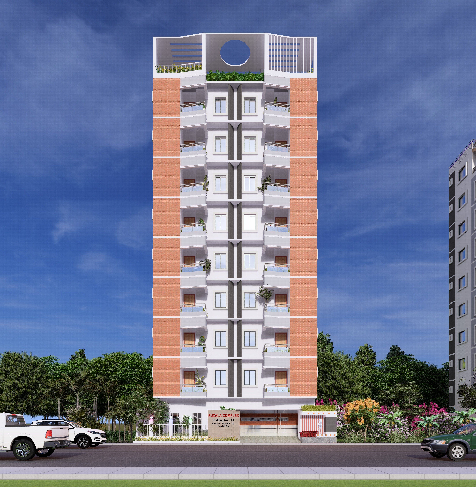

Building Trust Through Excellence
Sarker Design & Build is a modern civil engineering consultancy and construction firm dedicated to delivering high-quality, reliable, and innovative building solutions. We combine engineering expertise with practical execution to ensure every project meets the highest standards of safety, durability, and design excellence.
To provide trustworthy construction and consultancy services while maintaining transparency, quality, and client satisfaction at every stage of the project.
To become a leading name in the construction industry by building long-term relationships and delivering projects that stand the test of time.
At Sarker Design & Build, we believe construction is not just about buildings — it's about trust, responsibility, and long-term value. Every project we take reflects our commitment to quality and integrity.